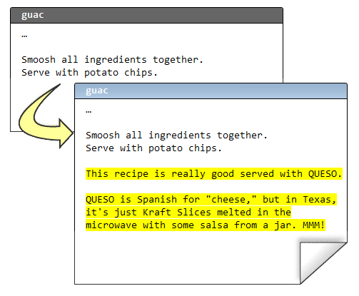
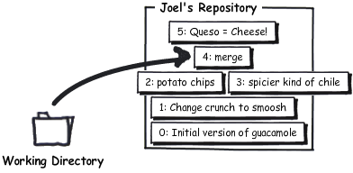

使用 Mercurial 的一个最大好处是, 你可以使用私有本地库来尝试和开发新特性... 如果新特性不管用, 你能在短时间内还原.
失误补救
Mercurial 让你能够尽情尝试. 假设在日常编辑过程中, 你的编辑器发生了异常, 结果你的代码悲剧了:
hg revert
Note
hg revert
将修改的文件恢复到最近一次提交后的状态
非得爱上 emacs 才行吗 (译注: emacs 是 Linux/Unix 下一款功能强大但入门困难的编辑器). 不管怎样, 啥也没弄丢. 从这类情况中恢复回来最常用的操作是使用 hg revert:
C:\Users\joel\recipes> hg revert guac
之后文件便恢复到它们最近一次提交完成时的状态. Mercurial 不会乱删任何东西, 所以它没有删掉 Pig Latin (译注: 故意颠倒英语字母顺序拼凑而成的行话) 式的配方, 而是采用重命名的方式:
C:\Users\joel\recipes> dir
Volume in drive C has no label.
Volume Serial Number is 84BD-9C2C
Directory of C:\Users\joel\recipes
02/11/2010 11:16 AM <DIR> .
02/11/2010 11:16 AM <DIR> ..
02/11/2010 11:16 AM <DIR> .hg
02/11/2010 11:16 AM 393 guac
02/11/2010 11:15 AM 510 guac.orig
2 File(s) 903 bytes
3 Dir(s) 40,958,005,248 bytes free
C:\Users\joel\recipes> del guac
C:\Users\joel\recipes> rename guac.orig guac
如果你多走了一步, 已经提交了该怎么办?
C:\Users\joel\recipes> hg com -m "Pig Latin ftw"
C:\Users\joel\recipes> hg log -l 3
changeset: 5:c7af1973de6d
tag: tip
user: Joel Spolsky <joel@joelonsoftware.com>
date: Thu Feb 11 11:32:27 2010 -0500
summary: Pig Latin ftw
changeset: 4:0849ca96c304
parent: 2:4ecdb2401ab4
parent: 3:689026657682
user: Joel Spolsky <joel@joelonsoftware.com>
date: Mon Feb 08 16:07:23 2010 -0500
summary: merge
changeset: 3:689026657682
parent: 1:a52881ed530d
user: Rose Hillman <rose@example.com>
date: Mon Feb 08 15:29:09 2010 -0500
summary: spicier kind of chile
hg rollback
Note
hg rollback
撤销最后一次提交, 前提是你还没有把它推送 (push) 给其他人
hg rollback 可以挽救你, 但当且仅当你还没有把变更推送 (push) 给其他人. 它只能撤销 一次 提交.
C:\Users\joel\recipes> hg rollback
rolling back last transaction
C:\Users\joel\recipes> hg log -l 3
changeset: 4:0849ca96c304
tag: tip
parent: 2:4ecdb2401ab4
parent: 3:689026657682
user: Joel Spolsky <joel@joelonsoftware.com>
date: Mon Feb 08 16:07:23 2010 -0500
summary: merge
changeset: 3:689026657682
parent: 1:a52881ed530d
user: Rose Hillman <rose@example.com>
date: Mon Feb 08 15:29:09 2010 -0500
summary: spicier kind of chile
changeset: 2:4ecdb2401ab4
user: Joel Spolsky <joel@joelonsoftware.com>
date: Mon Feb 08 15:32:01 2010 -0500
summary: potato chips. No one can eat just one.
C:\Users\joel\recipes> hg stat
M guac
C:\Users\joel\recipes> hg revert guac
假设你私底下在做一项重要尝试. 你的老板雇了一个新设计师, Jim, 但最近你从他那拿到的规格说明非常愚蠢. 正文采用绿色荧光, 而且参差不齐 (说是出于 “艺术效果” 的考虑), 可用性非常糟糕. 你甚至都想用一个周末的时间重新处理一下, 但是你为提交的事犯愁, 因为你没法 100% 确保你的想法比那个疯子图形设计师会更好. Jim 从他起床的那一刻到睡觉前基本上都在抽大麻. 你不想用这件事来攻击他, 而且所有人都认为只要他的设计不错, 这不关任何人的事, 但说实话, 这总得有个底限. 对吧? 而且他的设计也说不上好. 加上他还有些让人不爽.
使用 Mercurial, 你可以 clone 出一份完整的试验库:
C:\Users\joel\recipes> cd ..
C:\Users\joel> hg clone recipes recipes-experiment
updating to branch default
1 files updated, 0 files merged, 0 files removed, 0 files unresolved
效率并不像看上去的那么低. 由于 recipes 和 recipes-experiment 共享了 (目前为止) 所有的历史, Mercurial 会使用文件系统的一个特性 - “硬链接 (hard links)” 使复制操作异常迅速, 而且占用更少的磁盘空间.
现在, 我们来对试验分支做些变更:
C:\Users\joel> cd recipes-experiment
以下就是我那顶级鳄梨酱试验配方:
在试验库里, 我们可以自主决定 commit 与否.
C:\Users\joel\recipes-experiment> hg com -m "Queso = Cheese!"
你可以尽情修改文件, 在任何时候提交变更. 它给予你源代码控制的所有权力, 甚至支持你做一些疯狂的试验, 而不会给其他人制造麻烦.
如果你最终发现试验失败, 你只须删除整个试验目录, 问题就解决了, 一去不复返.
但如果试验成功, 你只要 push 新的变更即可:
C:\Users\joel\recipes-experiment> hg push
pushing to c:\Users\joel\recipes
searching for changes
adding changesets
adding manifests
adding file changes
added 1 changesets with 1 changes to 1 files
hg paths
Note
hg paths
显示远程版本库列表
提交的变更上哪儿去了?
C:\Users\joel\recipes-experiment> hg paths
default = c:\Users\joel\recipes
“default” 的键值为 hg push 缺省 (即命令行参数中未指定其它版本库) 推送变更的目标库路径. 一般而言, “default” 的键值指向你 clone 时的目标库. 在本例情况中, 它的值为本地目录, 当然这个值也可以是一个 URL.
C:\Users\joel\recipes-experiment> cd ..\recipes
注意别忘了, 变更正是推送到这个 版本库 ...
C:\Users\joel\recipes> hg log -l 3
changeset: 5:9545248f3fc9
tag: tip
user: Joel Spolsky <joel@joelonsoftware.com>
date: Thu Feb 11 12:59:11 2010 -0500
summary: Queso = Cheese!
changeset: 4:0849ca96c304
parent: 2:4ecdb2401ab4
parent: 3:689026657682
user: Joel Spolsky <joel@joelonsoftware.com>
date: Mon Feb 08 16:07:23 2010 -0500
summary: merge
changeset: 3:689026657682
parent: 1:a52881ed530d
user: Rose Hillman <rose@example.com>
date: Mon Feb 08 15:29:09 2010 -0500
summary: spicier kind of chile
hg parent
Note
hg parent
显示当前正基于哪 (几) 个变更集进行开发工作
... 但这并不表示我们当前正工作在推送后的版本.
C:\Users\joel\recipes> type guac
* 2 ripe avocados
* 1/2 red onion, minced (about 1/2 cup)
* 1-2 habanero chiles, stems and seeds removed, minced
* 2 tablespoons cilantro leaves, finely chopped
* 1 tablespoon of fresh lime or lemon juice
* 1/2 teaspoon coarse salt
* A dash of freshly grated black pepper
* 1/2 ripe tomato, seeds and pulp removed, chopped
Smoosh all ingredients together.
Serve with potato chips.
C:\Users\joel\recipes> hg parent
changeset: 4:0849ca96c304
parent: 2:4ecdb2401ab4
parent: 3:689026657682
user: Joel Spolsky <joel@joelonsoftware.com>
date: Mon Feb 08 16:07:23 2010 -0500
summary: merge
看到了没? “Queso” 相关的修改在 5 号变更集. 但是我的个人主库当前工作在 4 号变更集, 这是因为某人向 版本库 推送新的变更并不意味着这些变更就会在我的工作目录立即生效, 所以我当前所有工作仍然是基于 4 号变更集.
如果我想看看 5 号变更集里面到底有些啥, 我可以使用 hg update 命令:
C:\Users\joel\recipes> hg up
1 files updated, 0 files merged, 0 files removed, 0 files unresolved
C:\Users\joel\recipes> hg parent
changeset: 5:9545248f3fc9
tag: tip
user: Joel Spolsky <joel@joelonsoftware.com>
date: Thu Feb 11 12:59:11 2010 -0500
summary: Queso = Cheese!
C:\Users\joel\recipes> type guac
* 2 ripe avocados
* 1/2 red onion, minced (about 1/2 cup)
* 1-2 habanero chiles, stems and seeds removed, minced
* 2 tablespoons cilantro leaves, finely chopped
* 1 tablespoon of fresh lime or lemon juice
* 1/2 teaspoon coarse salt
* A dash of freshly grated black pepper
* 1/2 ripe tomato, seeds and pulp removed, chopped
Smoosh all ingredients together.
Serve with potato chips.
This recipe is really good served with QUESO.
QUESO is Spanish for "cheese," but in Texas,
it's just Kraft Slices melted in the microwave
with some salsa from a jar. MMM!
瞧瞧发生了什么? 变更生效了, 但是是基于我之前工作的版本之上. push 和 pull 仅仅是把变更从一个版本库发送到另一个 – 不影响当前工作的文件.
这便是版本库当前的状态:

Mercurial 在版本库之间传递变更的方式上非常灵活. 你可以把变更直接从试验库推送到中央库:
C:\Users\joel\recipes> cd ..\recipes-experiment
C:\Users\joel\recipes-experiment> hg outgoing http://joel.example.com:8000/
comparing with http://joel.example.com:8000/
searching for changes
changeset: 5:9545248f3fc9
tag: tip
user: Joel Spolsky <joel@joelonsoftware.com>
date: Thu Feb 11 12:59:11 2010 -0500
summary: Queso = Cheese!
C:\Users\joel\recipes-experiment> hg push http://joel.example.com:8000/
pushing to http://joel.example.com:8000/
searching for changes
adding changesets
adding manifests
adding file changes
added 1 changesets with 1 changes to 1 files
以上操作把 5 号变更从试验库直接推送到了中央库. 现在, 如果我返回到我的个人主库, 会发现没有可推送的变更!
C:\Users\joel\recipes-experiment> cd ..\recipes
C:\Users\joel\recipes> hg out
comparing with http://joel.example.com:8000/
searching for changes
no changes found
这是因为 Mercurial 分析出中央库已经从其它地方得到了指定的变更集. 这个功能非常有用, 否则会发生重复推送, 把版本库搞得杂乱而冗余.
... (译注: 有意忽略一段, 不影响阅读) ...
hg backout
有时你可能会发现, 早在几个月前, 你犯了个错误:
C:\Users\joel\recipes> hg diff -r 1:2 guac
diff -r a52881ed530d -r 4ecdb2401ab4 guac
--- a/guac Mon Feb 08 14:51:18 2010 -0500
+++ b/guac Mon Feb 08 15:32:01 2010 -0500
@@ -8,4 +8,4 @@
* 1/2 ripe tomato, seeds and pulp removed, chopped
Smoosh all ingredients together.
-Serve with tortilla chips.
+Serve with potato chips.
Potato chips? WTF?! (译注: What the Fuck 缩写)
Mercurial 能够帮助你拆除 (backout) 早些时候的变更集. 它会分析变更集, 得出 反向变更集, 并应用于你当前的工作目录. 让我们试着拆除 2 号历史版本.
C:\Users\joel\recipes> hg backout -r 2 --merge
reverting guac
created new head
changeset 6:d828920f7f85 backs out changeset 2:4ecdb2401ab4
merging with changeset 6:d828920f7f85
merging guac
0 files updated, 1 files merged, 0 files removed, 0 files unresolved
(branch merge, don't forget to commit)
Oh shit, 什么状况?
C:\Users\joel\recipes> hg diff
diff -r 9545248f3fc9 guac
--- a/guac Thu Feb 11 12:59:11 2010 -0500
+++ b/guac Thu Feb 11 14:19:34 2010 -0500
@@ -8,7 +8,7 @@
* 1/2 ripe tomato, seeds and pulp removed, chopped
Smoosh all ingredients together.
-Serve with potato chips.
+Serve with tortilla chips.
This recipe is really good served with QUESO.
C:\Users\joel\recipes> hg com -m "undo thing from the past"
C:\Users\joel\recipes> hg push
pushing to http://joel.example.com:8000/
searching for changes
adding changesets
adding manifests
adding file changes
added 2 changesets with 2 changes to 1 files
时隔久远以后, “chips” 这个单词可能都从配方中消失了. 这类问题很可能会导致本次变更无法合并. 这种情况下, 你得手工解决合并冲突. 我们将在下一章节探讨这个问题.
小测验
下面的一些操作是学完本章教程后, 你应该要学会的:
- 还原意外的破坏 (在提交之前或之后)
- 从本地版本库
clone一份试验库 - 在版本库之间推送 (push)
- 恢复年代久远的错误变更